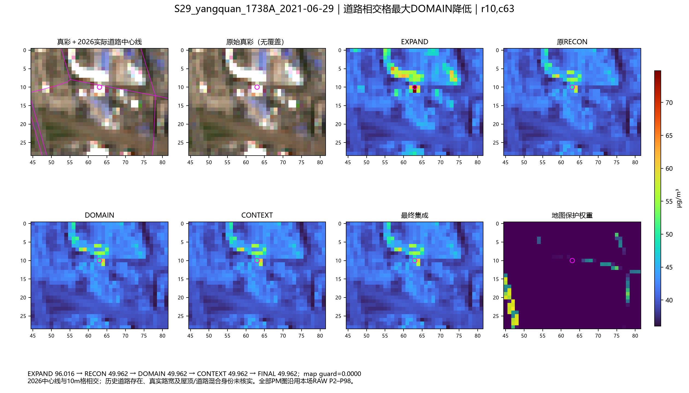
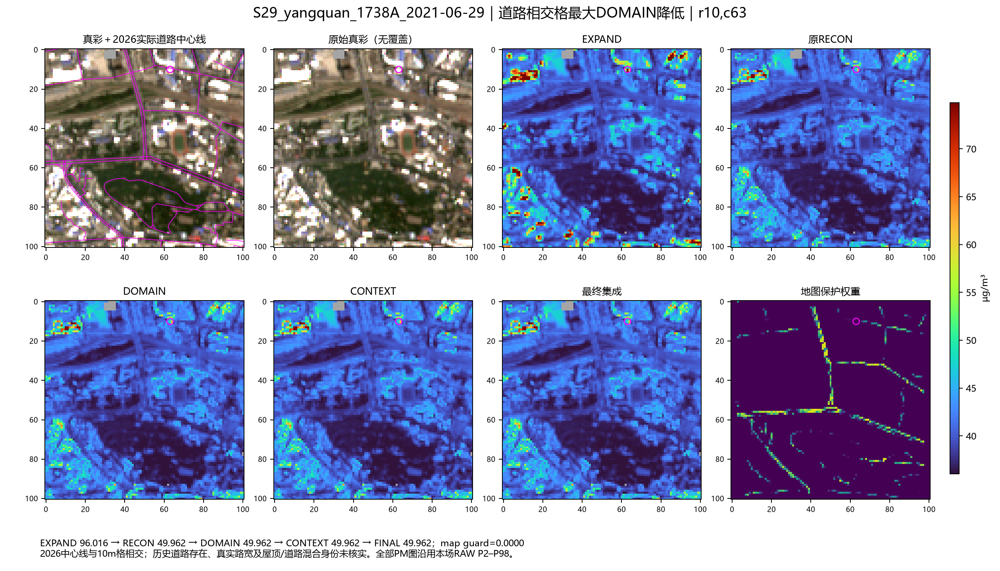
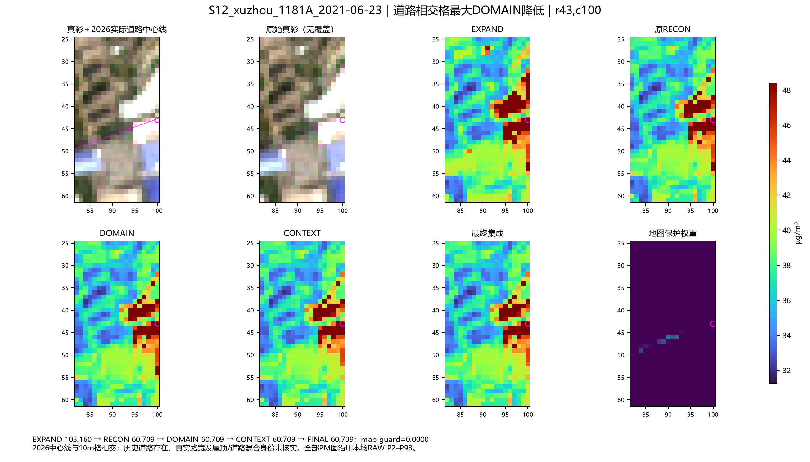
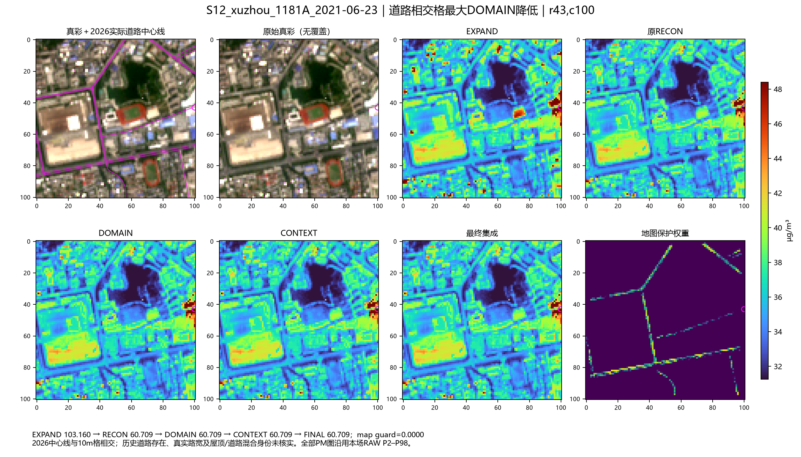
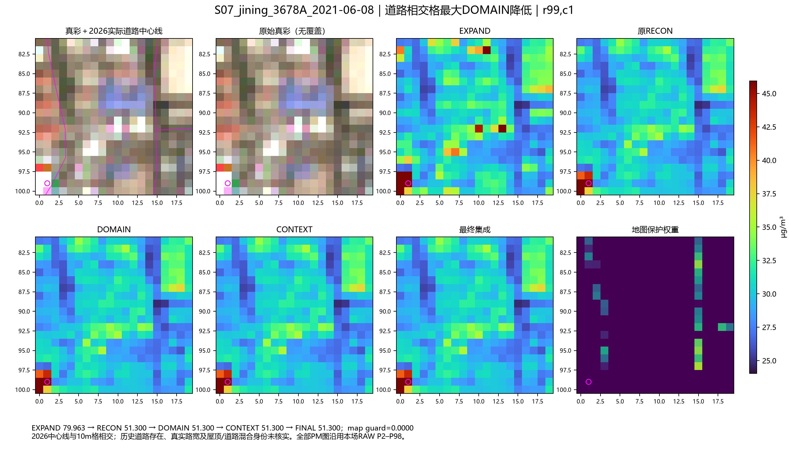
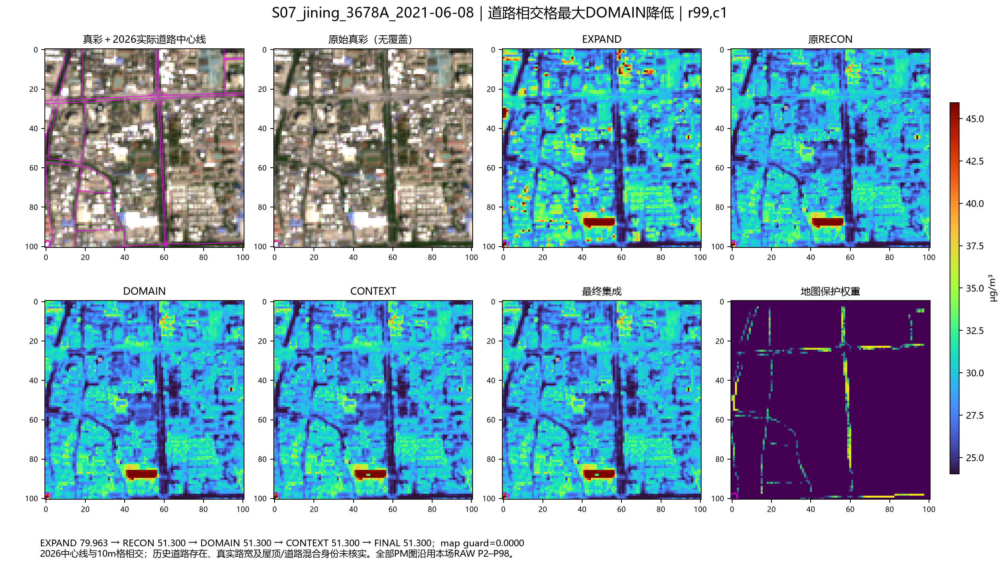

只诊断，未修改算法或设上限。2026地图不能确认历史道路路宽与混合像元身份。
r10,c63；VIS=1.3024，窗口边距10格；原guard 0.000，map guard 0.000。


r43,c100；VIS=1.4229，窗口边距0格；原guard 0.000，map guard 0.000。


r10,c63；VIS=1.0955，窗口边距10格；原guard 0.000，map guard 0.000。
r99,c1；VIS=1.1531，窗口边距1格；原guard 0.000，map guard 0.000。

